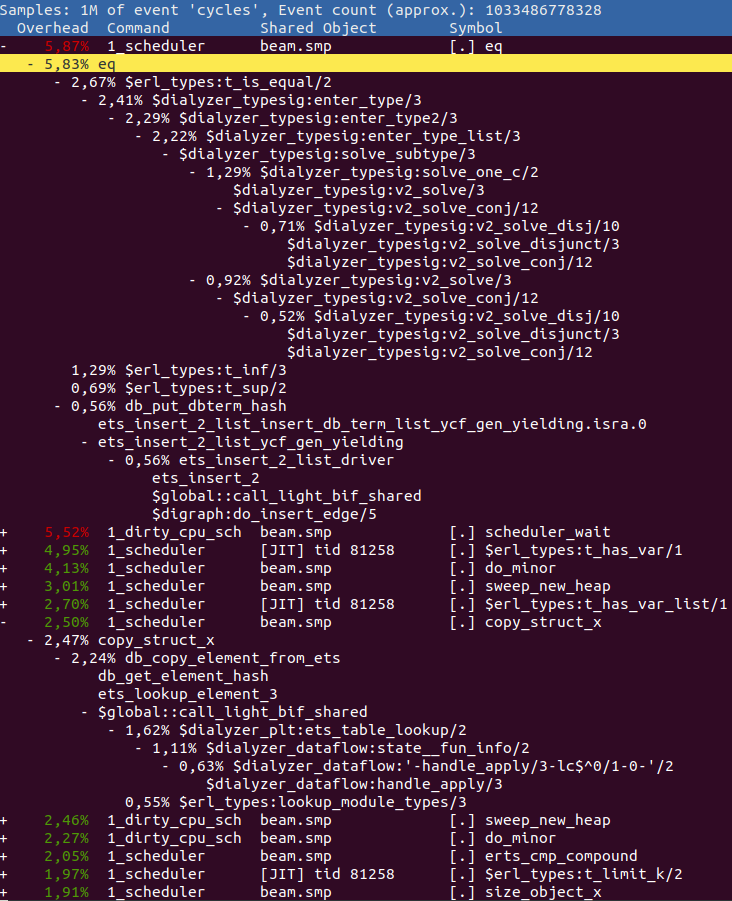
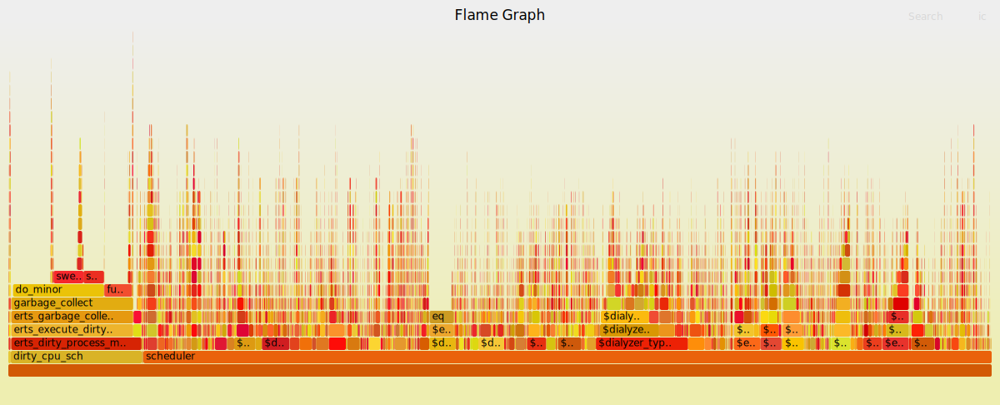
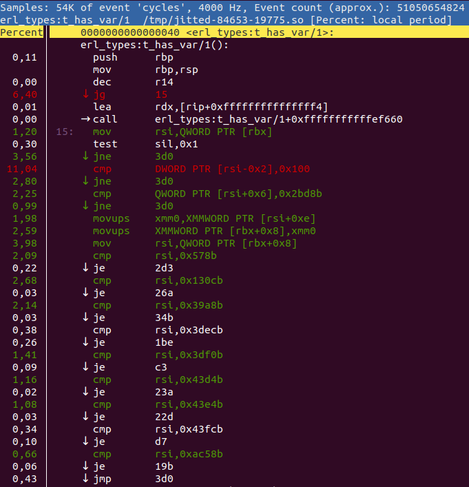

BeamAsm, the Erlang JIT
View SourceBeamAsm provides load-time conversion of Erlang BEAM instructions into native code on x86-64 and aarch64. This allows the loader to eliminate any instruction dispatching overhead and also specialize each instruction on their argument types.
BeamAsm does hardly any cross instruction optimizations and the x and y
register arrays work the same as when interpreting BEAM instructions.
This allows the Erlang run-time system to be largely unchanged except for
places that need to work with loaded BEAM instructions like code loading,
tracing, and a few others.
BeamAsm uses asmjit to generate native code in run-time. Only small parts of the Assembler API of asmjit is used. At the moment asmjit only supports x86 32/64 bit and aarch64 assembler.
Loading Code
The code is loaded very similarly to how it is loaded for the interpreter. Each beam file is parsed and then optimized through the transformations described in beam_makeops. The transformations used in BeamAsm are much simpler than the interpreter's, as most of the transformations for the interpreter are done only to eliminate the instruction dispatch overhead.
Then each instruction is encoded using the C++ functions in the
jit/$ARCH/instr_*.cpp files. For example:
void BeamModuleAssembler::emit_is_nonempty_list(const ArgVal &Fail, const ArgVal &Src) {
a.test(getArgRef(Src), imm(_TAG_PRIMARY_MASK - TAG_PRIMARY_LIST));
a.jne(labels[Fail.getLabel()]);
}asmjit provides a fairly straightforward
mapping from a C++ function call to the x86 assembly instruction. The above
instruction tests if the value in the Src register is a non-empty list and if
it is not then it jumps to the fail label.
For comparison, the interpreter has 8 combinations and specializations of this implementation to minimize the instruction dispatch overhead for common patterns.
The original register allocation done by the Erlang compiler is used to manage the liveness of values and the physical registers are statically allocated to keep the necessary process state. At the moment this is the static register allocation on x86-64:
rbx: ErtsSchedulerRegisters struct (contains x/float registers and some metadata)
rbp: Current frame pointer when `perf` support is enabled, otherwise this
is an optional save slot for the Erlang stack pointer when executing C
code.
r12: Active code index
r13: Current running process
r14: Remaining reductions
r15: Erlang heap pointerNote that all of these are callee save registers under the System V and Windows ABIs which means that BeamAsm never has to spill any of these when making C function calls.
The caller save registers are used as scratch registers within instructions but
usually do not carry information between them. For some frequent instruction
sequences such as tuple matching cross instruction optimization are done to avoid
fetching the base address of the tuple in every get_tuple_element instruction.
Reducing code size and load time
One of the strengths of the interpreter is that it uses relatively little memory for loaded code. This is because the implementation of each loaded instruction is shared and only the arguments to the instructions vary. Using as little memory as possible has many advantages; less memory is used, loading time decreases, higher cache hit-rate.
In BeamAsm we need to achieve something similar since the load-time of a module scales almost linearly with the amount of memory it uses. Early BeamAsm prototypes used about double the amount of memory for code as the interpreter, while current versions use about 10% more. How was this achieved?
In BeamAsm we heavily use shared code fragments to try to emit as much code as possible as global shared fragments instead of duplicating the code unnecessarily. For instance, the return instruction looks something like this:
Label yield = a.newLabel();
/* Decrement reduction counter */
a.dec(FCALLS);
/* If FCALLS < 0, jump to the yield-on-return fragment */
a.jl(resolve_fragment(ga->get_dispatch_return()));
a.ret();The code above is not exactly what is emitted, but close enough. The thing to note is that the code for doing the context switch is never emitted. Instead, we jump to a global fragment that all return instructions share. This greatly reduces the amount of code that has to be emitted for each module.
Running Erlang code
Running BeamAsm code is very similar to running the interpreter, except that native code is executed instead of interpreted code.
We had to tweak the way the Erlang stack works in order to execute native
instructions on it. While the interpreter uses a stack slot for
the current frame's return address (setting it to [] when unused), the
native code merely reserves enough space for it as the x86 call and ret
instructions bump the stack pointer when executed.
This only affects the current stack frame, and is functionally identical aside from two caveats:
Exceptions must not be thrown when the return address is reserved.
It's hard to tell where the stack will end up after an exception; the return address won't be on the stack if we crash in the current stack frame, but will be if we crash in a function we call. Telling these apart turned out to rather complicated, so we decided to require the return address to be used when an exception is thrown.
emit_handle_errorhandles this for you, and shared fragments that have been called (rather than jumped to) satisfy this requirement by default.Garbage collection needs to take return addresses into account.
If we're about to create a term we have to make sure that there's enough space for this term and a potential return address, or else the next
callwill clobber said term. This is taken care of inemit_gc_testand you generally don't need to think about it.
In addition to the above, we ensure that there's always at least S_REDZONE
free words on the stack so we can make calls to shared fragments or trace
handlers even when we lack a stack frame. This is merely a reservation and has
no effect on how the stack works, and all values stored there must be valid
Erlang terms in case of a garbage collection.
Frame pointers
To aid debuggers and sampling profilers, we support running Erlang code with
native frame pointers. At the time of writing, this is only enabled together
with perf support (+JPperf true) to save stack space, but we may add a flag
to explicitly enable it in the future.
When enabled, continuation pointers (CP) have both a return address and a frame pointer that points at the previous CP. CPs must form a valid chain at all times, and it's illegal to have "half" a CP when the stack is inspected.
Frame pointers are pushed when entering an Erlang function and popped before leaving it, including on tail calls as the callee will immediately push the frame pointer on entry. This has a slight overhead but saves us the headache of having multiple entry points for each function depending on whether it's tail- or body-called, which would get very tricky once breakpoints enter the picture.
Running C code
As Erlang stacks can be very small, we have to switch over to a different stack
when we need to execute C code (which may expect a much larger stack). This is
done through emit_enter_runtime and emit_leave_runtime, for example:
mov_arg(ARG4, NumFree);
/* Move to the C stack and swap out our current reductions, stack-, and
* heap pointer to the process structure. */
emit_enter_runtime<Update::eReductions | Update::eStack | Update::eHeap>();
a.mov(ARG1, c_p);
load_x_reg_array(ARG2);
make_move_patch(ARG3, lambdas[Fun.getValue()].patches);
/* Call `new_fun`, asserting that we're on the C stack. */
runtime_call<4>(new_fun);
/* Move back to the C stack, and read the updated values from the process
* structure */
emit_leave_runtime<Update::eReductions | Update::eStack | Update::eHeap>();
a.mov(getXRef(0), RET);All combinations of the Update constants are legal, but the ones given to
emit_leave_runtime must be the same as those given to emit_enter_runtime.
Tracing and NIF Loading
To make tracing and NIF loading work there needs to be a way to intercept any function call. In the interpreter, this is done by rewriting the loaded BEAM code, but this is more complicated in BeamAsm as we want to have a fast and compact way to do this. This is solved by emitting the code below at the start of each function (x86 variant below):
0x0: short jmp 6 (address 0x8)
0x2: nop
0x3: relative near call to shared breakpoint fragment
0x8: actual code for functionWhen code starts to execute it will simply see the short jmp 6 instruction
which skips the prologue and starts to execute the code directly.
When we want to enable a certain breakpoint we set the jmp target to be 1,
which means it will land on the call to the shared breakpoint fragment. This
fragment checks the current breakpoint_flag stored in the ErtsCodeInfo of
this function, and then calls erts_call_nif_early and
erts_generic_breakpoint accordingly.
Note that the update of the branch and breakpoint_flag does not need to be
atomic: it's fine if a process only sees one of these being updated, as the
code that sets breakpoints/loads NIFs doesn't rely on the trampoline being
active until thread progress has been made.
The solution for AArch64 is similar.
Updating code
Because many environments enforce W^X it's not always possible to write directly to the code pages. Because of this we map code twice: once with an executable page and once with a writable page. Since they're backed by the same memory, writes to the writable page appear magically in the executable one.
The erts_writable_code_ptr function can be used to get writable pointers
given a module instance, provided that it has been unsealed first:
for (i = 0; i < n; i++) {
const ErtsCodeInfo* ci_exec;
ErtsCodeInfo* ci_rw;
void *w_ptr;
erts_unseal_module(&modp->curr);
ci_exec = code_hdr->functions[i];
w_ptr = erts_writable_code_ptr(&modp->curr, ci_exec);
ci_rw = (ErtsCodeInfo*)w_ptr;
uninstall_breakpoint(ci_rw, ci_exec);
consolidate_bp_data(modp, ci_rw, 1);
ASSERT(ci_rw->gen_bp == NULL);
erts_seal_module(&modp->curr);
}Without the module instance there's no reliable way to figure out the writable
address of a code page, and we rely on address space layout randomization
(ASLR) to make it difficult to guess. On some platforms, security is further
enhanced by protecting the writable area from writes until the module has been
unsealed by erts_unseal_module.
Export tracing
Unlike the interpreter, we don't execute code inside export entries as that's very annoying to do in the face of W^X. When tracing is enabled, we instead point to a fragment that looks at the current export entry and decides what to do.
This fragment is shared between all export entries, and the export entry to
operate on is assumed to be in a certain register (RET as of writing). This
means that all remote calls must place the export entry in said register,
even when we don't know beforehand that the call is remote, such as when
calling a fun.
This is pretty easy to do in assembler and the emit_setup_dispatchable_call
helper handles it nicely for us, but we can't set registers when trapping out
from C code. When trapping to an export entry from C code one must set
c_p->current to the ErtsCodeMFA inside the export entry in question, and
then set c_p->i to beam_bif_export_trap.
The BIF_TRAP macros handle this for you, so you generally don't need to
think about it.
Description of each file
The BeamAsm implementation resides in the $ERL_TOP/erts/emulator/beam/jit folder.
The files are:
asm_load.c- BeamAsm specific functions for loading code
beam_asm.h- Header file describing the C -> C++ api
beam_jit_metadata.cppgdband Linuxperfsupport for BeamAsm
load.h- BeamAsm specific header for loading code
$ARCH/beam_asm.hpp- Header file describing the structs and classes used by BeamAsm.
$ARCH/beam_asm.cpp- The BeamAsm initialization code
- The C -> C++ interface functions.
$ARCH/generators.tab,$ARCH/predicates.tab,$ARCH/ops.tab- BeamAsm specific transformations for instructions. See beam_makeops for more details.
$ARCH/beam_asm_module.cpp- The code for the BeamAsm module code generator logic
$ARCH/beam_asm_global.cpp- Global code fragments that are used by multiple instructions, e.g. error handling code.
$ARCH/instr_*.cpp- Implementation of individual instructions grouped into files by area
$ARCH/process_main.cpp- Implementation of the main process loop
Linux perf support
The JIT can provide symbols to the Linux profiler perf, making it possible to
profile Erlang code with it. Depending on the mode used, perf will provide
functionality similar to eprof or
fprof but with much lower (and
configurable) overhead.
You can run perf on BeamAsm like this:
# Start Erlang under perf
perf record -- erl +JPperf true
# Record a running instance started with `+JPperf true` for 10s
perf record --pid $BEAM_PID -- sleep 10
# Record a running instance started with `+JPperf true` until interrupted
perf record --pid $BEAM_PIDand then look at the results using perf report as you normally would with
perf.
Frame pointers are enabled when the +JPperf true option is passed, so you can
use perf record --call-graph=fp to get more context, making the results
similar to that of fprof. This will give you accurate call graphs for pure
Erlang code, but in rare cases it fails to track transitions from Erlang to C
code and back. perf record --call-graph=lbr
may work better in those cases, but it's worse at tracking in general.
For example, you can run perf to analyze dialyzer building a PLT like this:
ERL_FLAGS="+JPperf true +S 1" perf record --call-graph=fp \
dialyzer --build_plt -Wunknown --apps compiler crypto erts kernel stdlib \
syntax_tools asn1 edoc et ftp inets mnesia observer public_key \
sasl runtime_tools snmp ssl tftp wx xmerl toolsThe above code is run using +S 1 to make the perf output easier to understand.
If you then run perf report -f --no-children you may get something similar to
this:

Any Erlang function in the report is prefixed with a $ and all C functions have
their normal names. Any Erlang function that has the prefix $global:: refers
to a global shared fragment.
So in the above, we can see that we spend the most time doing eq, i.e. comparing two terms.
By expanding it and looking at its parents we can see that it is the function
erl_types:t_is_equal/2 that contributes the most to this value. Go and have a look
at it in the source code to see if you can figure out why so much time is spent there.
After eq we see the function erl_types:t_has_var/1 where we spend almost
5% of the entire execution in. A while further down you can see copy_struct_x
which is the function used to copy terms. If we expand it to view the parents
we find that it is mostly ets:lookup_element/3 that contributes to this time
via the Erlang function dialyzer_plt:ets_table_lookup/2.
Flame Graph
You can also create a Flame Graph from the perf output. Flame Graphs are basically
just another way to look at the same data as the perf report output, but can
be more easily shared with others and manipulated to give a graph tailor-made for
your needs. For instance, if we run dialyzer with all schedulers:
## Run dialyzer with multiple schedulers
ERL_FLAGS="+JPperf true" perf record --call-graph=fp \
dialyzer --build_plt -Wunknown --apps compiler crypto erts kernel stdlib \
syntax_tools asn1 edoc et ftp inets mnesia observer public_key \
sasl runtime_tools snmp ssl tftp wx xmerl tools --statisticsAnd then use the scripts found at Brendan Gregg's CPU Flame Graphs web page as follows:
## Collect the results
perf script > out.perf
## run stackcollapse
stackcollapse-perf.pl out.perf > out.folded
## Create the svg
flamegraph.pl out.folded > out.svgWe get a graph that would look something like this:

You can view a larger version here. It contains the same information, but it is easier to share with others as it does not need the symbols in the executable.
Using the same data we can also produce a graph where the scheduler profile data
has been merged by using sed:
## Strip [0-9]+_ and/or _[0-9]+ from all scheduler names
## scheduler names changed in OTP26, hence two expressions
sed -e 's/^[0-9]\+_//' -e 's/^erts_\([^_]\+\)_[0-9]\+/erts_\1/' out.folded > out.folded_sched
## Create the svg
flamegraph.pl out.folded_sched > out_sched.svg
You can view a larger version here. There are many different transformations that you can do to make the graph show you what you want.
{kind=link}
Annotate perf functions
If you want to be able to use the perf annotate functionality (and in extension
the annotate functionality in the perf report gui) you need to use a monotonic
clock when calling perf record, i.e. perf record -k mono. So for a dialyzer
run you would do this:
ERL_FLAGS="+JPperf true +S 1" perf record -k mono --call-graph=fp \
dialyzer --build_plt -Wunknown --apps compiler crypto erts kernel stdlib \
syntax_tools asn1 edoc et ftp inets mnesia observer public_key \
sasl runtime_tools snmp ssl tftp wx xmerl toolsIn order to use the perf.data produced by this record you need to first call
perf inject --jit like this:
perf inject --jit -i perf.data -o perf.jitted.dataand then you can view an annotated function like this:
perf annotate -M intel -i perf.jitted.data erl_types:t_has_var/1or by pressing a in the perf report ui. Then you get something like this:

perf annotate will interleave the listing with the original source code
whenever possible. You can use the +{source,Filename} or +absolute_paths
compiler options to tell perf where to find the source code.
WARNING: Calling
perf inject --jitwill create a lot of files in/tmp/and in~/.debug/tmp/. So make sure to cleanup in those directories from time to time or you may run out of inodes.
Inspecting perf data on another host
Sometimes it's not possible or desirable to inspect a recording on the target
machine, which gets a bit tricky because perf report relies on having all
symbols available.
To inspect recordings on another machine, you can use the perf archive
command to bundle all the required symbols into an archive. This requires that
the recording is made with the -k mono flag and that it has been processed
with perf inject --jit:
perf inject --jit -i perf.data -o perf.jitted.data
perf archive perf.jitted.dataOnce you have the archive, move it together with the processed recording to
the host you wish to inspect the recording on, and extract the archive to
~/.debug. You can then use perf report -i perf.jitted.data as usual.
If you get an error message along the lines of:
perf: 'archive' is not a perf-command. See 'perf --help'.
Then your perf version is too old, and you should use
this bash script
instead.
perf tips and tricks
You can do a lot of neat things with perf. Below is a list of some of the options
we have found useful:
perf report --no-childrenDo not include the accumulation of all children in a call.perf report --call-graph calleeShow the callee rather than the caller when expanding a function call.perf reportgives "failed to process sample" and/or "failed to process type: 68" This probably means that you are running a bugged version of perf. We have seen this when running Ubuntu 18.04 with kernel version 4. If you update to Ubuntu 20.04 or use Ubuntu 18.04 with kernel version 5 the problem should go away.
FAQ
How do I know that I'm running a JIT enabled Erlang?
You will see a banner containing [jit] shell when you start. You can also use
erlang:system_info(emu_flavor) to check the flavor and it should be jit.
There are two major reasons why when building Erlang/OTP you would not get the JIT.
- You are not building a 64-bit emulator for x86 or ARM
- You do not have a C++ compiler that supports C++-17
If you run ./configure --enable-jit configure will abort when it discovers that
your system cannot build the JIT.
Is the interpreter still available?
Yes, you can still build the interpreter if you want to. In fact, it is what is used
on platforms where BeamAsm does not yet work. You can either completely disable
BeamAsm by passing --disable-jit to configure. Or you can build the
interpreter using make FLAVOR=emu and then run it using erl -emu_flavor emu.
It is possible to have both the JIT and interpreter available at the same time.
How much of a speedup should I expect from BeamAsm compared to the interpreter?
It depends a lot on what your application does. Anything from no difference to up to four times as fast is possible.
BeamAsm tries very hard to not be slower than the interpreter, but there can be cases when that happens. One such could be very short-lived small scripts. If you come across any scenarios when this happens, please open a bug report at the Erlang/OTP bug tracker.
Would it be possible to add support for BeamAsm on other CPU architectures?
Any new architecture needs support in the assembler as well. Since we use
asmjit for this, that means we need support
in asmjit. BeamAsm uses relatively few
instructions (mostly, mov, jmp, cmp, sub, add), so it would not need
to have full support of all instructions.
Another approach would be to not use asmjit for the new architecture, but instead use something different to assemble code during load-time.
Would it be possible to add support for BeamAsm on another OS?
Adding a new OS that runs x86-64 or aarch64 should not need any large changes if the OS supports mapping of memory as executable. If the ABI used by the OS is not supported changes related to calling C-functions also have to be made.
As a reference, it took us about 2-3 weeks to implement support for Windows, and about three months to finish the aarch64 port.